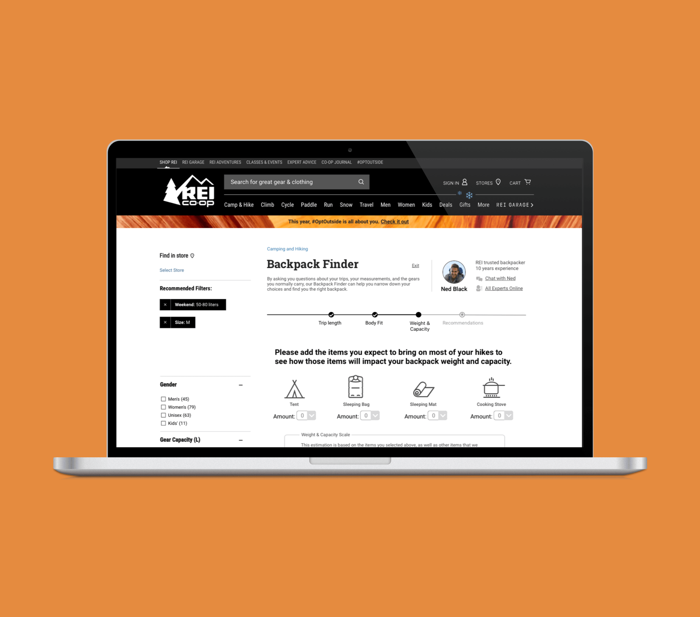
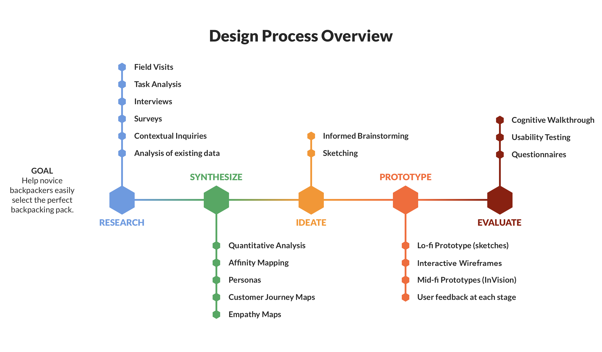

REI Backpack Finder
Helping novice backpackers find the perfect backpack

Overview
Problem
Novice backpackers have a hard time finding multi-day backpacks with the right features, capacity and fit. A single mistake during the purchase might end up affecting the health and even safety of the backpacker during an extended trip in wilderness.
Solution
We redesigned REI's website to provide more detailed guidance and support for novice backpackers to find the backpack of the right size, capacity, and features without having to travel to an REI store.
My Role
UX Researcher, UX Designer
Timeline
Sept. 2017 - Dec. 2017
Team Members
Tony Jin, Xinyi Chen, Lindsay Kelly, Brianna Pritchett, Xue Zhao
Tools
Qualtrics, Sketch, InVision
Our Approach
My Contribution
During the research phase, I contacted local REI stores for interview permissions. After the first store declined our request, my perseverance helped us discover alternative choices and more opportunities for interviews. I visited different REI stores for observations and interviews, and conducted a task analysis based on the data collected. I also took the lead to design and distribute a detailed online survey that yielded hundreds of responses with rich qualitative data. I then analyzed the survey data and helped create affinity diagrams. With the help of my teammate Lindsay, I created a customer journey map based on the data we gathered.
Generated in the ideation phase, my ideas of providing guidance through an interactive survey and community-based expert support were both refined and incorporated into our final design.
In addition, I created two versions of interactive prototypes in InVision for two rounds of user testing. I synthesized users' feedback from both rounds, developed design implications, and created the final User Interface using Sketch. I also moderated several cognitive walkthrough and usability testing sessions.